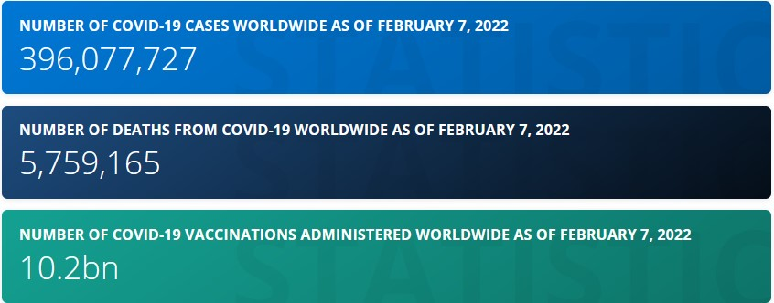

Statistics
As of 7th February 2022 (according to Statista.com),
Now here is the daily cases per day.
As you can see, the numbers spiked just 2 months ago, December 2021, and is still high. We also currently have 5.7 million deaths due to COVID. Here is the distribution per day.
This is the distribution of COVID cases per continent.
As of recently. Europe seems to be the frontrunner of the COVID cases, although the Americas rare not too far behind. During the past 2 year reign of the virus, it seems that cases have spiked everywhere since just 2 months ago - late December.
This means that the virus is still effectively spreading, and precautions still need to be taken.